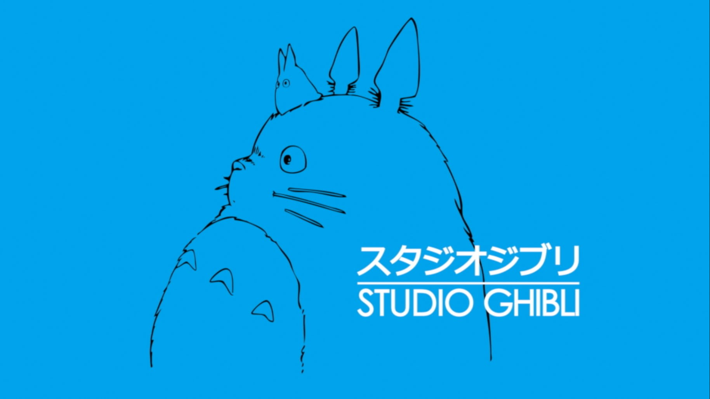

Studio Ghibli (スタジオジブリ Sutajio Jiburi?) es un estudio japonés de animación, considerado por la crítica especializada y muchos cinéfilos como uno de los mejores estudios de animación del mundo en la actualidad.1
Fundado en 1985, está dirigido por el galardonado director Hayao Miyazaki junto a su amigo y mentor, Isao Takahata. Sus orígenes datan de 1983, con la película Nausicäa del Valle del Viento, la cual comenzó como un manga en una publicación de la revista Tokuma Shoten. Tokuma era la compañía "madre" de Ghibli, y cedió a Disney los derechos de video y distribución de varias películas; entre ellas La princesa Mononoke y El viaje de Chihiro. El compositor Joe Hisaishi ha creado la banda sonora para muchas de las películas del Studio Ghibli. Debido a la fama de los estudios se abrió en las afueras de Tokio el Museo Ghibli. El 1 de septiembre de 2013, el director de cine y cofundador de la compañía, Hayao Miyazaki, anunció su retirada a través de un comunicado oficial. El 3 de agosto de 2014, Toshio Suzuki, productor del estudio y uno de los fundadores del estudio, anunciaba que clausuraban su sección de producción de largometrajes. Uno de los factores que provocaron esta decisión es la retirada del director de cine Hayao Miyazaki, otro de los fundadores del estudio, que según las declaraciones, fue un duro golpe su salida; junto con la jubilación del cineasta, se cree que la regular recepción de taquilla de Kaguya Hime no Monogatari, la última obra dirigida por Isao Takahata, ha sido también un motivo. El Studio Ghibli siguió con sus licencias hasta acabar un proceso de reestructuración.456 El 10 de agosto de 2017, el estudio reabrió sus puertas.789
Hayao Miyazaki
Hayao Miyazaki (宮崎 駿 Miyazaki Hayao?, Bunkyō, Tokio, Japón, 5 de enero de 1941) es un director de cine de animación, productor, animador, ilustrador, dibujante de mangas y productor de anime japonés, de renombre internacional y con una carrera de cinco décadas. Junto con Isao Takahata, fundó Studio Ghibli, un estudio de películas y animación. Ha sido comparado con Walt Disney, Steven Spielberg u Orson Welles.1 Entre sus filmes de animación más populares se hallan títulos como El viaje de Chihiro (que rebasó los ingresos en taquillas de Japón y superó el éxito obtenido por Titanic, también obtuvo el premio como Película del Año en los Premios de la Academia de Japón, y fue la primera película de anime en ganar un Premio Óscar), La princesa Mononoke, Mi vecino Totoro, Howl no Ugoku Shiro y Gake no ue no Ponyo. Sus películas hablan de la relación de la humanidad con la naturaleza, la tecnología y la dificultad de mantener una ética pacifista; las protagonistas regularmente son niñas y mujeres jóvenes fuertes e independientes. En dos de sus filmes, El castillo de Cagliostro y El castillo en el cielo, se presentan villanos tradicionales, mientras que en otros, como Nausicaä y La princesa Mononoke (1997; la primera película animada en ganar la categoría de Película del Año en los Premios de la Academia Japonesa y, por breve tiempo, la más taquillera en Japón, hasta que fue eclipsada por Titanic el mismo año), existen antagonistas moralmente ambiguos con características positivas. Co-escribió Karigurashi no Arriety y La colina de las amapolas. El 1 de septiembre de 2013, anunció, a través de un comunicado del presidente de la compañía, Koji Koshino, que su película Kaze Tachinu (estrenada en Japón el 20 de julio de 2013) sería su último largometraje, y que se retiraría como director de proyectos de animación de Ghibli.23456 En agosto de 2014, la Academia de Artes y Ciencias de Hollywood informó de la concesión a Miyazaki del Óscar honorífico como reconocimiento a toda su trayectoria.7Este premio le fue entregado en la ceremonia de los Óscar en enero del 2015. En el 2002, el crítico cinematográfico Roger Ebert sugirió que Miyazaki podría ser el mejor creador de películas de animación de la historia, y alabó la profundidad y nivel artístico de sus creaciones.8 El 25 de febrero de 2017, Studio Ghibli confirmó oficialmente el regreso de Miyazaki con Kimitachi wa Dō Ikiru ka, y cuyo estreno en Japón se espera para 2020 o 2021.910 El 10 de agosto de 2017, el estudio reabrió sus puertas.111213